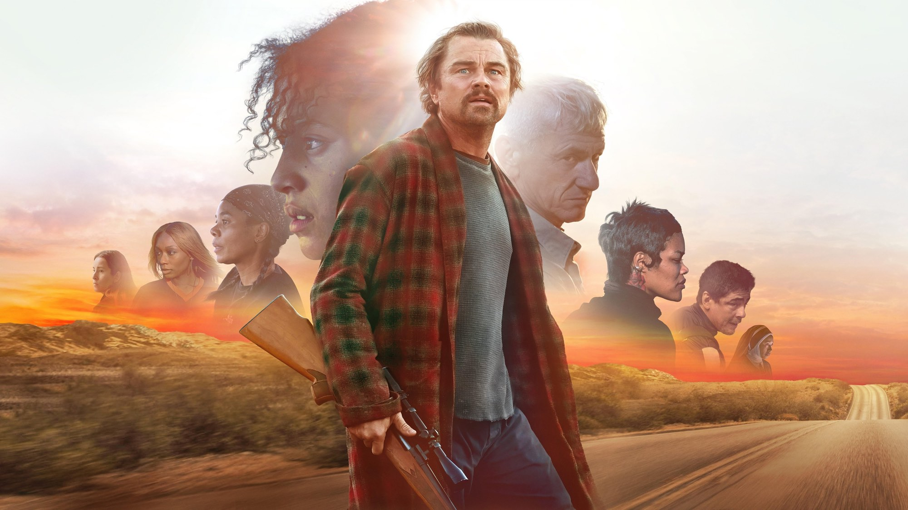
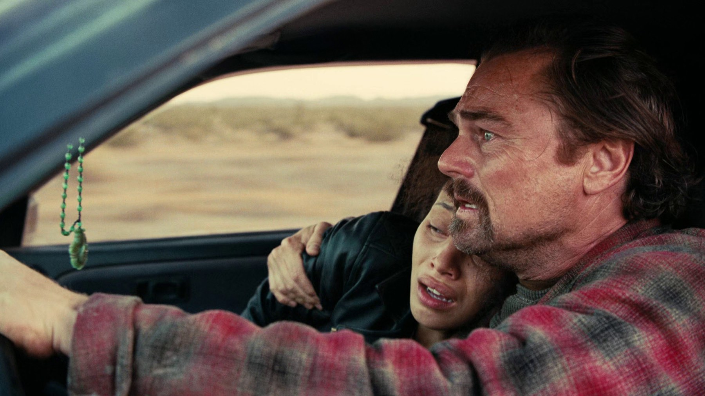
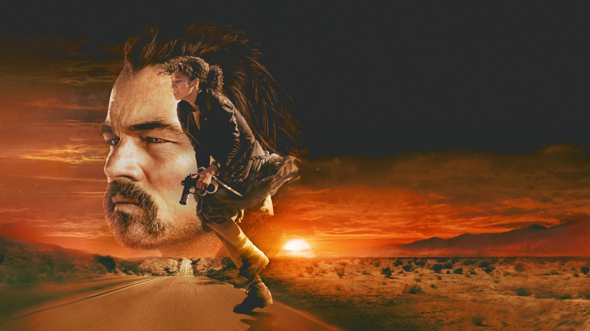

One Battle After Another e Pynchon: cosa resta di Vineland
Vent'anni di tentativi, un romanzo pieno di digressioni e un film che ne ha preso solo ciò che serviva: la strada di Paul Thomas Anderson da Vineland a Oscar 2026
Per vent'anni Paul Thomas Anderson ha provato a portare sullo schermo Vineland, il romanzo che Thomas Pynchon pubblicò nel 1990, e per vent'anni non ci è riuscito. Quando alla fine ha smesso di inseguire un adattamento fedele, ha firmato il film dal maggior incasso della sua carriera: One Battle After Another, uscito nelle sale italiane il 25 settembre 2025 con Warner Bros. È la storia di come una rinuncia sia diventata un metodo, e di quanto Pynchon sia davvero presente in questo film.
Un romanzo che sembrava impossibile da adattare
Vineland esce nel febbraio 1990 per Little, Brown ed è ambientato in California nel 1984, anno della rielezione di Ronald Reagan, con lunghi flashback sulla controcultura degli anni Sessanta. Al centro c'è Zoyd Wheeler, ex hippie che vive nascosto, e la figlia quattordicenne Prairie, braccata da un funzionario federale, Brock Vond. Sullo sfondo, la madre di Prairie, Frenesi Gates, che negli anni Sessanta aveva tradito il movimento. Secondo la voce di Wikipedia, il libro racconta le trasformazioni degli Stati Uniti dagli anni Sessanta agli Ottanta e lo scontro tra idealismo e repressione, soprattutto sul terreno della guerra alla droga.
È materiale ricchissimo, ma anche un romanzo che si perde volentieri in digressioni e comicità surreale. Non stupisce che Anderson, che secondo Wikipedia pensava al libro fin dai primi anni Duemila, non riuscisse a ridurlo a una sceneggiatura lineare.

La mossa decisiva: smettere di adattare
La svolta racconta molto del film. Secondo Wikipedia, Anderson ha messo da parte l'adattamento e ha immaginato due idee separate: un film d'azione con inseguimenti in auto e un film su una rivoluzionaria. Il risultato fonde queste due idee con alcuni elementi di Vineland, in particolare il rapporto tra padre e figlia. A Collider il regista ha spiegato di aver «rubato le parti che gli parlavano» e di essere partito di corsa «come un ladro»: una dichiarazione che nessun fedele di Pynchon si aspetterebbe da un adattatore, e che spiega perché il film abbia la velocità di un inseguimento e non il passo dell'enciclopedia.
Che il tono sia quello giusto, lo ha confermato lo stesso Pynchon: sempre secondo Collider, lo scrittore ha approvato il progetto. Per uno degli autori più schivi della letteratura, a cui Wikipedia attribuisce oltre cinquant'anni passati a evitare i giornalisti, non è un dettaglio da poco.
Cosa è rimasto e cosa è cambiato
Il nucleo è riconoscibile. Bob Ferguson, il personaggio di Leonardo DiCaprio, eredita secondo Collider i tratti di Zoyd Wheeler: due ex rivoluzionari stanchi che crescono una figlia mentre cercano di restare lontani dal proprio passato. Willa, la figlia interpretata da Chase Infiniti al suo debutto cinematografico, corrisponde a Prairie e porta con sé lo stesso scarto tra generazioni: i genitori hanno fatto la loro battaglia, i figli ereditano le conseguenze.
Cambia soprattutto l'epoca e la politica del racconto. Il romanzo guarda all'America di Reagan; il film, scrive Collider, sposta l'attenzione su temi di oggi come i centri di detenzione per migranti, le cliniche per l'aborto e la sorveglianza di Stato. Cambia anche la forma: dove Pynchon disperde la trama in mille rivoli, Anderson la tiene in tensione su una linea sola, la ricerca di una ragazza e la fuga di un padre. Il confronto con Vineland vale più per ciò che il film toglie che per ciò che conserva.
Il secondo Pynchon di Anderson
Non è la prima volta. Inherent Vice, presentato al New York Film Festival il 4 ottobre 2014, è stato il primo film mai tratto da un romanzo di Pynchon, uscito nel 2009. Anderson lo ha scritto e diretto con Joaquin Phoenix, ottenendo due candidature agli Oscar, per la sceneggiatura non originale e per i costumi. Incassò 14,8 milioni di dollari nel mondo contro un budget di 20, ma è finito al 75° posto in un sondaggio BBC del 2016 tra i critici sui migliori film del XXI secolo.
Il confronto tra i due film è istruttivo. Inherent Vice seguiva Pynchon quasi frase per frase, con tutta la sua nebbia da detective story; One Battle After Another ha fatto l'opposto, scegliendo di tradire il testo per restare fedele al suo spirito. Il secondo ha incassato circa 213 milioni di dollari nel mondo secondo Wikipedia, ottobre 2026, ed è il film dal maggior incasso della carriera di Anderson. Il budget è indicato tra i 130 milioni dichiarati da Warner Bros. e i 175 riportati da Variety, quindi per Anderson è un risultato record ma non una cifra facile da leggere come un trionfo di cassa.

Un film girato come si faceva una volta
La libertà dal romanzo si vede anche nel modo di filmare. Secondo Wikipedia, tra il 75 e l'80% del film è girato con cineprese VistaVision a 35 mm, tra gennaio e giugno 2024: prima gli undici giorni nella contea di Humboldt, poi Sacramento, il deserto di Anza-Borrego a maggio e infine El Paso in Texas. Benicio Del Toro è arrivato a lavorazione già avviata, dopo aver chiuso The Phoenician Scheme di Wes Anderson, con soli dieci giorni per disfare e rifare le valigie. La colonna sonora di Jonny Greenwood, registrata con la London Contemporary Orchestra, è uscita il 26 settembre 2025.
Dalla sala agli Oscar
Il passo successivo è la stagione dei premi. Alla 98ª edizione degli Oscar il film ha vinto sei statuette su tredici candidature: miglior film, regia, attore non protagonista a Sean Penn, sceneggiatura non originale, montaggio e casting, secondo Wikipedia. Ne parliamo nel nostro articolo Oscar 2026: tutti i vincitori, i record e le sorprese. Una sceneggiatura "non originale" per un film che con il libro condivide così poco è una di quelle ironie che Pynchon, probabilmente, apprezzerebbe.
Dove vederlo e da dove cominciare
Il film è in abbonamento su HBO Max e a noleggio su Apple TV Store, Amazon Video, CHILI, Rakuten TV e Timvision, secondo TMDB a ottobre 2026. Per il nostro giudizio, la recensione di One Battle After Another spiega perché ci ha convinto al di là della fedeltà al libro. Chi vuole restare nel cinema d'autore recente americano può proseguire con Sinners di Ryan Coogler: 8 curiosità sul film.
E Vineland, vale la pena leggerlo dopo? Sì, ma con le giuste aspettative: troverete un romanzo molto più strano, più comico e meno rassicurante del film. Anderson non l'ha tradotto, l'ha sfruttato come una miniera, e il suo film ne esce più libero proprio per questo.
Domande frequenti
One Battle After Another è tratto da un libro?
Sì, ma liberamente: parte da Vineland, il romanzo di Thomas Pynchon pubblicato nel 1990. Anderson ha tenuto alcuni elementi, soprattutto il legame tra un ex rivoluzionario e la figlia, e ha inventato il resto.
Bisogna leggere Vineland prima di vedere il film?
No. Il film si segue senza conoscere il romanzo, che è molto più digressivo e fuori dagli schemi. Chi ama Pynchon vi troverà echi e variazioni, chi non lo conosce vede un thriller con inseguimenti e un tono da commedia nera.
Dove vedere One Battle After Another in Italia?
Secondo i dati TMDB di ottobre 2026 è in abbonamento su HBO Max e a noleggio su Apple TV Store, Amazon Video, CHILI, Rakuten TV e Timvision. I cataloghi cambiano: conviene un controllo prima di cominciare.
Quanti Oscar ha vinto One Battle After Another?
Sei su tredici candidature alla 98ª edizione, secondo Wikipedia: miglior film, regia, attore non protagonista (Sean Penn), sceneggiatura non originale, montaggio e casting.